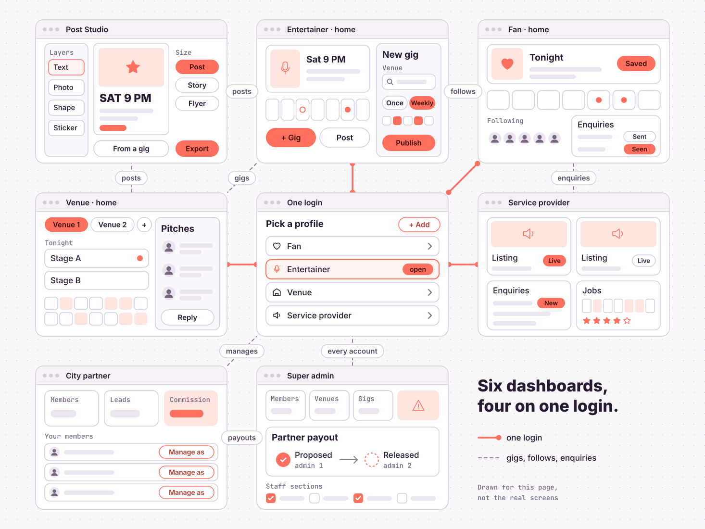

WorkCase study 04Client project
One account. Several kinds of user.
A hyper-local marketplace for live entertainment. One login can be a fan, an entertainer, a venue and a service provider, each with its own connected dashboard.
- Status
- Built and client-tested; not launched publicly
- Timeline
- 12 Jun – 29 Jul 2026, about 7 weeks
- My part
- Requirements and product decisions with the client, four testing rounds, and the AI-assisted build, which I directed.
Everything on this page is drawn. No client screens.
Six dashboards, four on one login
Pick a kind of user

One login
Pick a profile at sign-in; switch or add one anytime.
Shares the login with all four profiles
Drawn for this page; the product’s screens are available on request.
Six dashboards, and what joins them
The hard part was the account. One person can be a fan on Friday and on stage on Saturday, so one login holds several profiles that never mix. Here is the build, drawn.
-
Sign-in
One login, four profiles
Members pick a profile at sign-in and can switch or add another anytime. The fan profile keeps its own name and contact details.
-
Entertainer
An act adds a gig
One date or a weekly series, at a venue found by name. Each gig gets its own public page and a place on the calendar.
-
Post Studio
The gig becomes a post
Pick the gig and a template; venue, date and time fill in. Nine sizes, from a story to a printed flyer.
-
Venue
A venue runs its nights
One owner can run several venues, each with its own stages and gig calendar, plus an inbox for acts pitching to play.
-
Fan
A fan follows, and asks
Acts and venues the fan follows list their upcoming gigs for them. A booking enquiry shows as Sent, then Seen.
-
Service provider
Suppliers get shopfronts
Each listing is its own public page. Enquiries land in an inbox beside a calendar of jobs.
-
City partner
A partner looks after members
Members, leads and commission on one screen. “Manage as” works inside a member’s dashboard, and every change is logged to the real person.
-
Super admin
Payouts in two steps
A partner’s payout is proposed, then released in a second step, with both people recorded. Staff admins see only their sections.
68 changes in seven weeks, each signed off by the client
No usage figures: the platform isn’t public yet. These are delivery figures, dated.
Four testing rounds in seven weeks
12 Jun to 29 Jul 2026 · rounds in order, not to scale
- Round 1
- Round 2
- Round 3
- Round 4
Verified means the client re-tested the change on a working build and signed it off.
All the numbers (6)
- 68verified updates: each change was re-tested by the client on a working build and signed off12 Jun – 29 Jul 2026
- ~7 weeks47 days, from Friday 12 June to Wednesday 29 July2026
- 4client testing rounds, each tried on a working build before hand-over12 Jun – 29 Jul 2026
- 6dashboards: fan, entertainer, venue and service provider on one login, plus city partner and super adminas built
- 2steps in every city-partner payout: proposed, then released, with both people recorded; built for a second admin to sign offas built
- 0usage figures claimed: the platform has not launched publiclyto Nov 2026
Work continued after the fourth round; nothing dated after 29 Jul 2026 is counted in the 68. The rounds are drawn in order and evenly, not to scale.
See the real screens
The platform isn’t public, so this page is drawn. Tell me who you are and I’ll send the screens.
What you’ll receive
An email from me with the product’s screens, white-labelled, and answers to your questions.
- All six dashboards
- Post Studio
- The profile switcher
How it was built
I set the requirements with the client, ran four testing rounds and directed the build.
- Laravel
- Blade
- Alpine.js
- Tailwind CSS
- MySQL
- AI-assisted
- Scope the round with the clientWhat it covers, in the client’s words.
- Build it, AI-assistedI direct AI coding tools and test every change.
- The client tests a working buildThe real product, not a mock-up.
- Fix, re-test, sign offRepeated four times, 12 Jun to 29 Jul 2026.